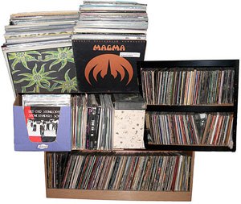
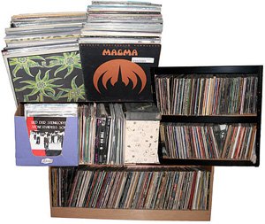

basekamp space > Events
PUBLIC COLLECTORS
Dear Collectors, material culture aficionados, amateur archivists, and librarian wannabes,
Your presence and participation is requested at the Basekamp space in Philadelphia, on Sunday, October 7th, from 5:00-7:00 PM for a Free presentation and show and tell with Marc Fischer from the newly-formed initiative Public Collectors. (http://www.publiccollectors.org/)
 

Public Collectors consists of informal agreements where collectors allow the contents of their collection to be published and permit those who are curious to directly experience the objects in person. Participants must be willing to type up an inventory of their collection, provide a means of contact and share their collection with the public. Collectors can be based in any geographic location.
Public Collectors is founded upon the concern that there are many types of cultural artifacts that public libraries, museums and other institutions and archives either do not collect or do not make freely accessible. Public Collectors asks individuals that have had the luxury to amass, organize, and inventory these materials to help reverse this lack by making their collections public.
The purpose of this project is for large collections of materials to become accessible so that knowledge, ideas and expertise can be freely shared and exchanged.
Visitors are encouraged to bring examples from their own collections to informally discuss. We'll have a casual show and tell and discuss ways to make your private accumulations of stuff something that can have a greater social value among others with shared concerns.
Marc Fischer is a Chicago-based artist and a member of the long-running group Temporary Services. He is also an active co-founder of Mess Hall, an experimental cultural center in Chicago's Rogers Park neighborhood. In January of 2007 Fischer curated the exhibition "Captive Audience" at Gallery 400 at University of Illinois at Chicago which focused on collaborations between prison inmates and people on the outside.
Basekamp space
723 chestnut street, 2nd floor
philadelphia, pa 19106 usa
+1 215 206 8176
http://basekamp.com
Directions:
Take Market-Frankford subway to 8th Street stop. Exit on Market Street. Walk 1 block South on 8th Street, and 1/2 block East on Chestnut Street. Entrance door is halfway up the stairs on the left.
driving (googlemaps)
bus (chinatown)
local public transp (septa)